Proposal, 2 Nov. Nothing built. Drag to move, scroll or pinch to zoom.
The idea in four lines
Count belongs to a place. It sits on the pen page, not in a pig's Actions.
Tagged pigs by scan, untagged by number. A pig read here that the record places elsewhere moves here.
Nothing disappears because it wasn't read. A pig not seen stays where she is recorded.
A difference in untagged pigs is unaccounted on the batch. No reason is asked, and births and deaths are never rewritten.
Changed after your review
No "Last counted" on Home. A reminder of the last count is not work, so it is gone.
A recount is asked for inside the task that needs it. In the old app it lived inside the task too (see the next column). Count is never a standing reminder.
Count saved is a glance: one tile per pen. ✓ means it matches, amber means look at it, and grey means it wasn't counted. Below the tiles is only the pig not seen.
How the old app did it
Recount lived inside the task, not on Home.
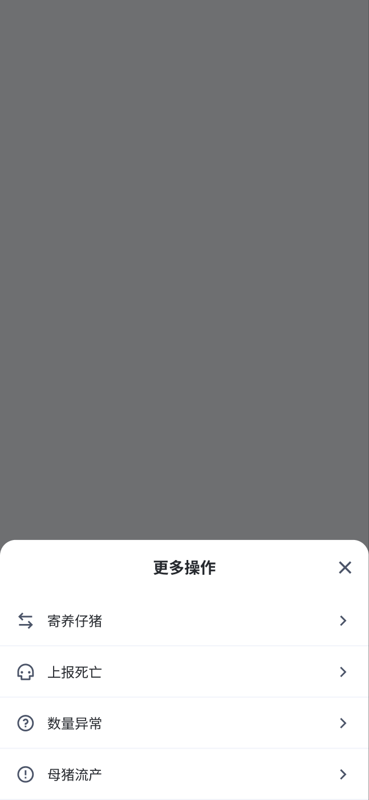
Old · piglet task 更多操作 › 数量异常 (count anomaly). Inside the task's More actions, beside Foster and Report death. The worker opens it when the number looks wrong.
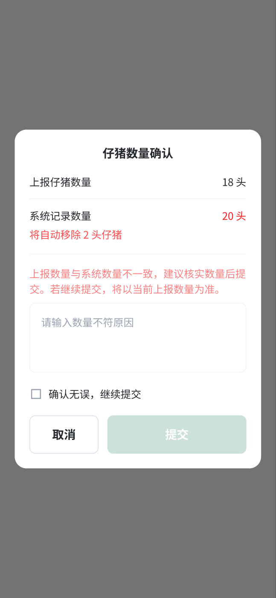
Old · piglet task 仔猪数量确认. When the piglets entered (18) differ from the record (20): "will remove 2 piglets automatically". It asks for a reason and a "confirm, continue" checkbox before Submit.
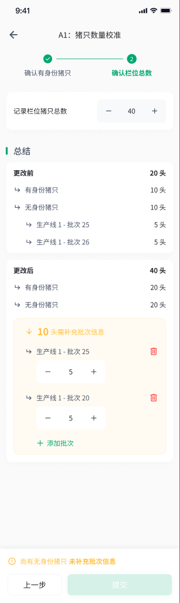
Old · inspection 猪只数量校准. The pen recount, behind a hidden pencil icon. A two-step wizard where every untagged pig must be split into batch rows before Submit unlocks.
So a "recount needed" is a task's own number disagreeing
The old app had no reminder. It checked the task's number against the record (piglets processed against piglets alive). On the web, the transfer task 转舍 tracked 已转出 / 已转入 (sent out / received) per batch. The receiving step on the phone was never drawn.
Proposed: when receiving pigs in Transfer (not designed yet) finds 28 where 30 were sent, the task itself asks for a count of that pen. The same is true of any task whose number disagrees. Home stays quiet.
Start a count
From the pen, any time. From a task, when its number is off.
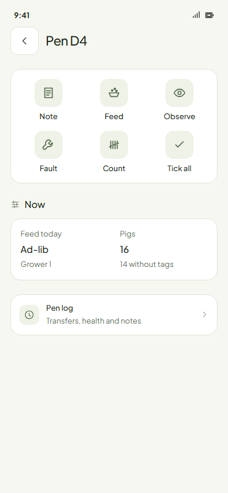
New Pen page. Count joins Note, Feed, Observe, Fault and Tick all (3 + 3). Nothing about counting shows anywhere else until it is needed.
Count one pen
Pen D4: 2 sows with ear tags and 14 pigs without.
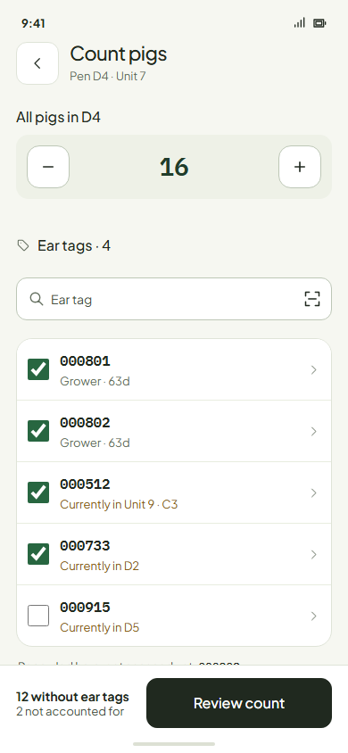
New Fewer. The stepper starts at what should be there (14). The worker sets 12: 2 unaccounted in batch 25. The two tagged pigs tick as they are read. Since the last count (below) explains the 14.
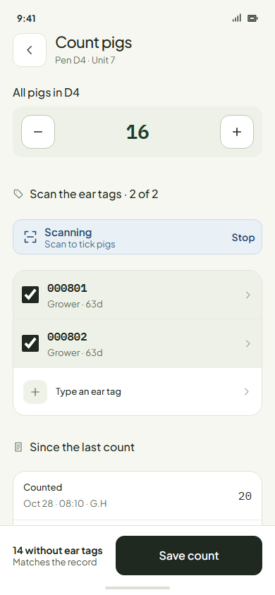
New Matches. Saving still writes the count, so the next one starts from it.
Count a room by scan
The reader is always listening. Pens in walking order. Pens you skip stay as they are.
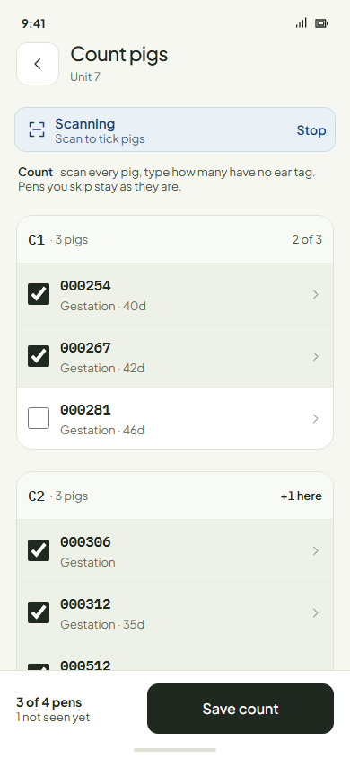
New Unit 7. Each read ticks the pig where she is; the card says 2 of 3. The footer keeps the tally.
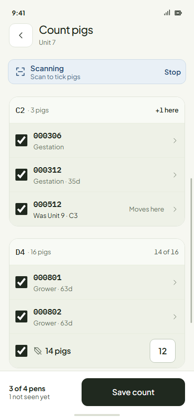
New A pig from elsewhere. 000512, recorded in Unit 9 · C3, is read among C2's sows and moves here. D4's untagged group took 12 in its field.
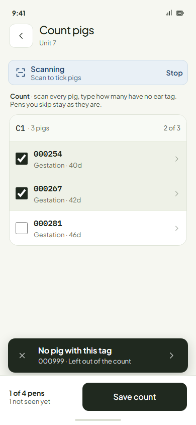
New An unknown tag. The shared scan toast. The tag is left out and the count goes on.
Count saved
Redrawn: a glance, not a read.
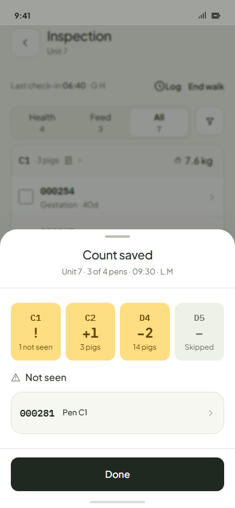
New One tile per pen, the same pens as the room count. A pen that matches gets a ✓ (none does here). Amber is different: +1 a pig moved in, −2 unaccounted, ! a tagged pig not seen. Grey was not counted. The only row is the pig not seen; opening her is the way to report her missing.
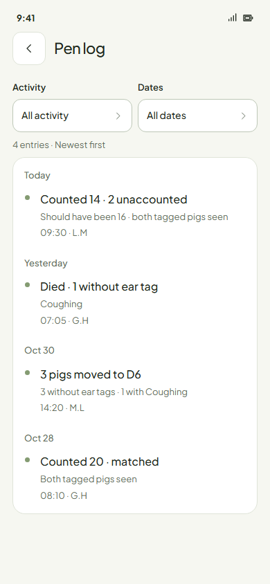
New The pen log.Counted 14 · 2 unaccounted. The move and the death since then are their own lines. History is never rewritten.
Untagged pigs carry their conditions
For any action on some of a group: Transfer, Report death, selling.
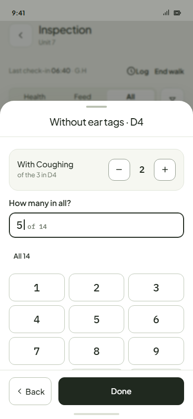
New Pick 5 of 14, of them 2 with Coughing. D4 keeps Coughing · 1 and the new pen gets Coughing · 2. Nothing is copied. Taking the whole group takes every condition, with no question.
Your questions
Each has my recommendation.
A whole-room count outside a task: do you still want one, and if so where? Recommend: only from the task that asks for it (receiving pigs). A pen's own count covers everything else.
Tagged pigs not seen stay recorded where they were. Missing is always a person's call. Recommend: yes.
A pig read here moves here when the count is saved. Recommend: yes.
A room count proves the room, not the pen. A pig in the wrong pen inside the room is fixed by counting that pen. Recommend: yes.
One batch per pen for untagged pigs: pigs moved in join the pen's batch. Recommend: yes. It removes the old batch split.
Conditions follow the pick (default 0; the whole group takes all). Recommend: yes.
A body found after a count asks no question. The next count finds one more than expected, so the batch evens out. Recommend: yes (Round 9).
The number starts at the record, not empty. Recommend: yes.
A sow found in another crate brings her litter with her. Recommend: yes.